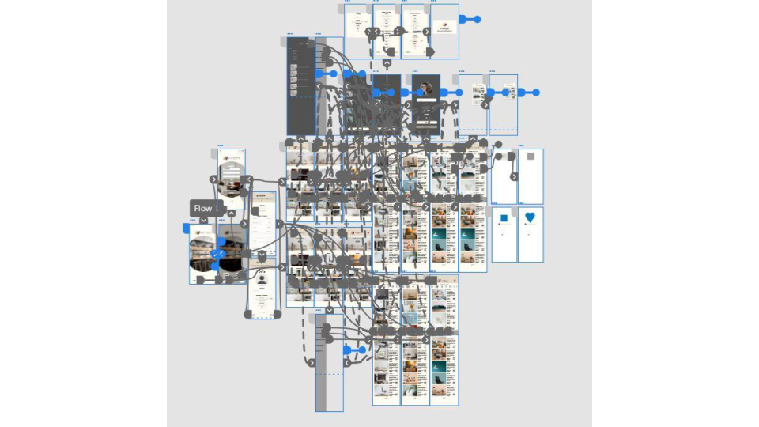
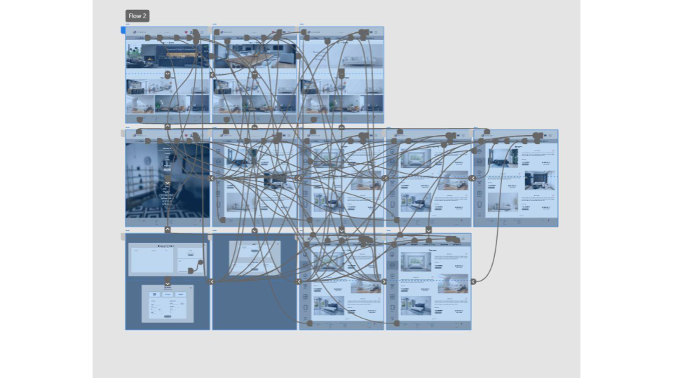

Maynooth is a mobile application and website, retailing home furniture. This was my very first project in UX design for my Udemy course. I was given a brief and a persona and was to design for what was given.
The final high-fidelity prototype presented the sasme user flow. It includes all of the changes made after the usability study.
 Used detailed imaages to represent the meal. To help users better understand what they are clicking on.
Tested color contrast on WebAIM and compared WCAG, making sure my color pallette is user friendly.
Used icons to help make navigation easier.